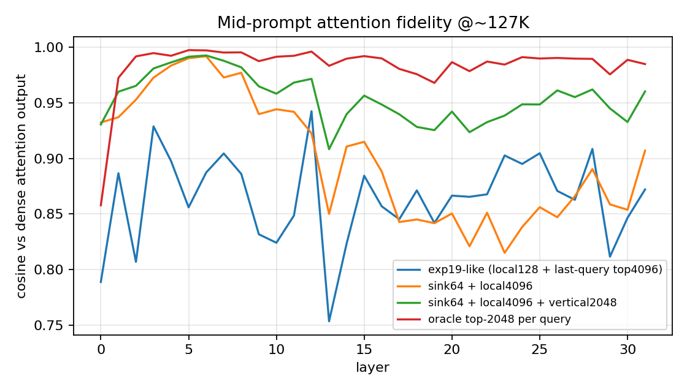
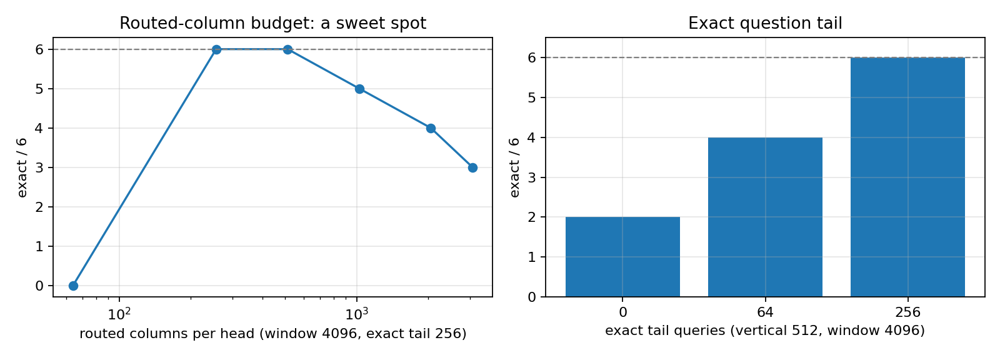
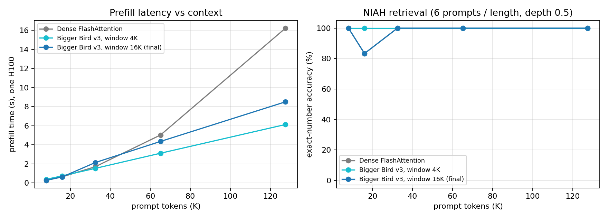
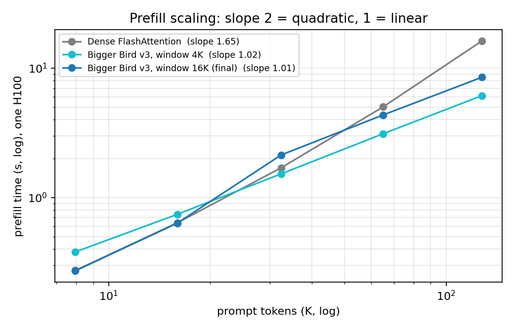
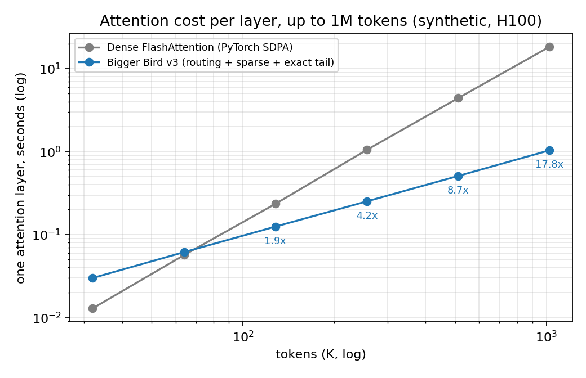
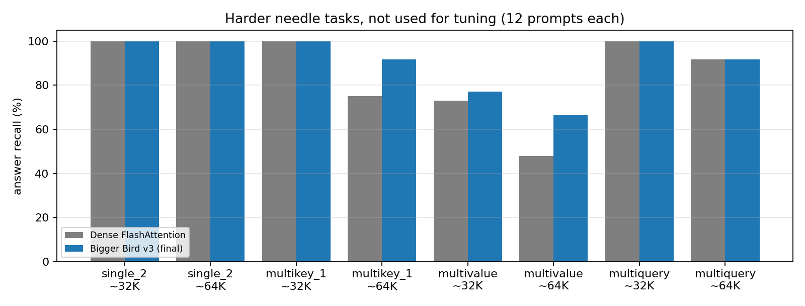
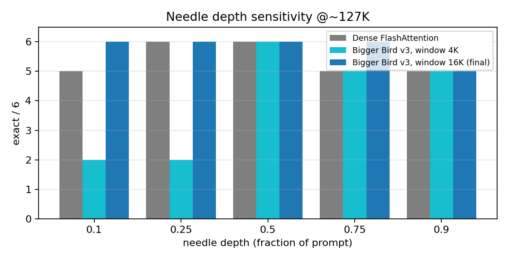

UTMIST Bigger Bird · frozen DeepSeek-R1-Distill-Llama-8B · zero-shot · one H100
faster prefill than dense FlashAttention at ~127K tokens (2.65× with a 4K window)
exact retrieval @~127K at depths 0.5 and 0.1 (dense: 28/30, 28/30)
faster attention at 1M tokens; measured scaling exponent 1.01 vs dense 1.65
Synthetic RULER-style needle-in-a-haystack, same prompts as earlier CCDB rounds. Details and limits at the end.

Each query attends to a union of key sets in one Triton sparse FlashAttention kernel (single softmax):
Decode: exact attention over the full KV cache (O(n) per generated token).
Cost per layer, prompt length n:
attention n · (64 + 16384 + 512)
routing 64 · n tail 256 · n
→ linear in n for fixed budgets (dense: n²/2).
Short prompts (n ≤ window) fall back to exact attention.
Code: modal_rd/attention.py, kernel kernels/bigger_bird_flash.py


| tokens | dense | v3, window 4K | v3, window 16K (final) |
|---|---|---|---|
| ~32K | 1.70 s | 1.52 s (1.1×) | 2.13 s (0.8×) |
| ~65K | 5.03 s | 3.11 s (1.6×) | 4.35 s (1.2×) |
| ~127K | 16.22 s | 6.12 s (2.65×) | 8.50 s (1.9×) |
Sparse prefill doubles per doubling of context (linear); dense grows ~3.2× per doubling.




| context | arm | exact (all 30) | held-out 6–29 | mean prefill |
|---|---|---|---|---|
| ~65K | Dense FlashAttention | 30/30 | 24/24 | 5.02 s |
| ~65K | v3, window 4K | 30/30 | 24/24 | 3.10 s |
| ~65K | v3, window 16K | 30/30 | 24/24 | 4.41 s |
| ~127K | Dense FlashAttention | 28/30 | 22/24 | 16.25 s |
| ~127K | v3, window 4K | 28/30 | 22/24 | 6.10 s |
| ~127K | v3, window 16K (final) | 30/30 | 24/24 | 8.61 s |
| ~127K, depth 0.1 | Dense FlashAttention | 28/30 | 23/24 | 16.39 s |
| ~127K, depth 0.1 | v3, window 16K (final) | 30/30 | 24/24 | 8.56 s |
The final config matches dense on every confirmation set, with 1.9× faster prefill at ~127K. A 2-prompt difference at n=30 is within noise: read this as parity, not "better than dense".
Prompts 0–5 were used for tuning. Prompts 6–29 share generator, seed and depth: a within-task held-out check, not broad generalization.
Reproduce: modal run modal_rd/app.py --module modal_rd.eval_niah --args "--arm vs --attn '{...}' --bytes 512000 --n 30 --tag x"